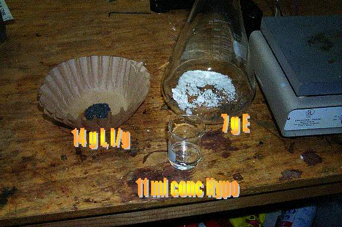
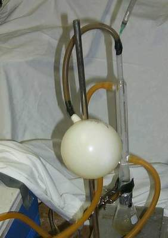
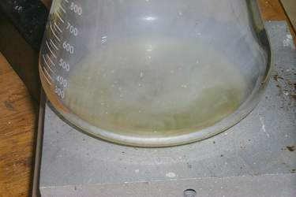
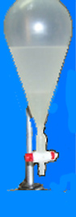
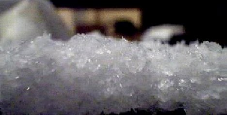
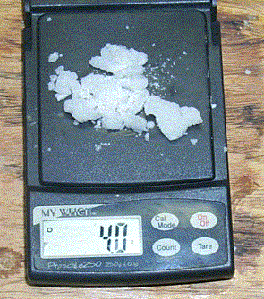

(Pseudo)Ephedrine reduction with I2 and H2PO2
...Or "Go-Go without the Red - A tale of the Hypo Method"
[ Back to the Chemistry Archive ]
Disclaimer:
The material contained herein is merely for informational purpose and is not
to be carried out unless written permission from local law enforcement is gained.
The author takes NO responsibility for what one does with this information.
Before even reading the procedure below, check with your local/state/national
government to ensure that the law is not being broken.
Overview
Due to the difficulty in some area’s
to acquire rp, SWIM went in search of alternate methods for Go-Go. (Well,
and to try something new). A post on Rhodium’s site done by Pebble (Reduction of Ephedrine
to Methamphetamine Using Hypophosphorus Acid) with a few references on the
hive where all that was found. After several very successful reaction
and amazed at the quality of end product it was determined that more info was
needed out there. Pebbles method had many concerns regarding safety that
were bothersome. (Smelling contents in between stages of the reaction.
Reaction being carried out in an open vessel, ect…). That brings us to this
point.
- 7 g of P-fed or Eph…CLEAN (E-Gull
method, or The Cure
on cleaning out the Gaak).
- 11 ml Con. Hypophosphorus Acid (Conc.
Described later)
- 14 g I2 crystals (If tint is
used, make sure that it is absolutely dry!)
- 1 : 1.25 (E : Hypo) & 1 : 1.5
(Hypo : I)
- 250 ml Flat Bottom Flask (or
any reaction vessel)
- 200 ml beaker
- PYREX Evap Dish
- Reflux Condenser or 3 ft Surgical
Tubing
- Heat source (Hot Plate or electric
eye)
- d-H2O (Don’t risk loosing quality
over 79 cents / gal)
- Sodium Hydroxide
- Ice (For Reflux Condenser Cooling
and basifying)
- Sep Funnel (500 ml glass works great)
- Toluene, Naphtha or Non-Polar
solvent of choice (Xylene has been the choice lately due to Gaak's solubility
in Toluene)
- HCl (30% LG), or Muratic Acid if in
a pinch
- 6- Pack of beer of choice
- Don’t be sloppy
- The end result is directly proportional
to the effort applied!
- Dry reagents are a necessity.
Water in any of the Hypo/I/E will hinder the reaction.
- Take pride in your work, and don’t
be in a hurry.

The
E and Hypo are placed into the reaction flask (250ml flat bottom or larger).
Heat is genteelly applied to the flask. What your are looking for is the
E mixing with the Hypo. Not all the E will mix, but get as much as possible.
Place sealed flask in the freezer for 20- 30 min.
(Hypo loves to absorb moisture) Set up the reflux condenser with ice
water circulating through it. If no reflux is available connect tubing to a
stopper of the appropriate size to fit the reaction flask. (Any which way, drink
a beer).
Remove the flask and place in a ice bath,
acetone and ice works well fine. On rxn above 10g one may concider using Dry
Ice and acetone for a ice bath.. (Keeping the contents cold will help buy you
some time while connecting up the reflux condenser or tubing and will help keep
the reaction under control). Attach tubing to the end of the reflux condenser,
or flask if not using a condenser, and run it to your vapor containment unit
(VCU, p/p unit, a bottle with the tube stuck inside and a wet paper towel to
seal off the opening. The beer bottle from that beer you just drank could
work). The I is added to the flask and spread over hypo/E as best as possible
while the contents are still frozen. Once the I hits the Hypo/E mix
and the flask and contents slowly warm, it will start to liquefy. (Sometimes
one side of the flask is still frozen while the other is bubbling away). Bubbling
will start to occur and will get more vigorous. Better yields and fewer
side products are obtainable by allowing the reaction to liquefy, but not bubble
out of control at first. (DO NOT smell the fumes…They will raise hell
with your nose and lungs). The flask may have white smoke inside.
Once liquefied, gently swirl the flask and mix the contents as best as possible.
The color should go from dark red/purple to a light reddish-yellow. If
the color didn’t change or the I2 is still liquid, gently swirling the reaction
flask and place onto a WARM heat source. (Try using the palm of your
hand first then a hot plate set on warm). If the contents of the flask
have not gone to a orange-ish/reddish color after applying heat, then add 1
- 2ml of Hypo and mix gently. If your Hypo has been concentrated,
the reaction should have started without the addition of any heat. If
the hypo was not concentrated heat will have to be applied to boil off the excess
water.
Apply
low-heat to the reaction flask until it starts to bubbling at a good hard steady
rate. Note: DO NOT heat contents above 180° -
200° C or yields can suffer. Once a steady
bubbling begins, look for white crystals (HI) in the tubing or in the glass tubing
connector in the stopper. If a fog is forming in the vessel, try to keep it going
for a few minuets. The contents should continue to bubble by itself for some
time even when removed from the heat. (30 sec up to 4 min, depending on
the vessels wall thickness and the Hypo/I amount). Look at the color of the reaction.
If you notice a reddish color starting to appear, give the contents a few swirls
and then place back on the heat. If the reddish color forms again, 1-2 ml Hypo
should be added down the condenser/tubing and placed back on the heat. The color
should lighten back up to a light gold/pale yellow color. Remove from heat.
After the boiling has subsided, mix/swirl
the contents and then heat was again applied to the bottom of the flask.
Notice the length in time decreases that it will boil by itself. Pay
attention to the size of the bubbles in the solution while the contents are
being heated. As the reaction goes on the size of the bubbles get larger.
Note: Keep the contents liquefied. To much mixing and letting
the contents cool will cause it to solidify and is a pain to get it going again.
White
smoke should have been noticed faintly flowing into the flask. Large amounts
of 'snow' should be pressent on the glass walls. Add a few mls of dH2O down
the tubing or reflux condencer to wash the 'snow' down. Return to the heat source.
After 20 - 30 min of the smoke flowing into the reaction vessel, disconnect
the tubing at the opposite end of the flask and add a few more ml (1 to 2 ml
MAX) of dH2O to assist in washing down the new 'snow'. Work the water down into
the flask. You should start seeing more white smoke flowing into the vessel. Apply
heat until the fog flow rate into the flask is clearly obvious and fairly constant.
( Usually let this run for another 10-15 min…Overkill? Don’t know, but one wants
to make sure everything has been converted) Note: Check the temp of the
reaction. Remember to not go above 180° C or
yields can suffer. When the size of the bubbles is dramaticly
larger than they originally where, the reaction is done.
If unsure the reaction went, apply heat
once again and notice if there is a change in bubble size and length of time
it bubbles when removed. The color of the solution should now be a pale yellow
to almost a clear color. If the bubbling dies off fairly quickly, its probably
done.
Un-stopper the flask. Now all the harsh
nasty vapors should be undetectable. If experience has been done with
the rp/I method you should be able to smell “That Smell”, if not experienced,
there should be a sweat rotten-egg smell, but nothing that irritates your nose.
If “The Smell” is undetectable, your not done. Place contents back onto the
heat source and bring to a slow boil for 10 - 15 minutes (almost like refluxing),
and then check again.
Phase One completed.
Continue washing down the walls
of the flask, condenser/tubing with dH2O. Once satisfied, prepare 200
to 400 ml of your NP (Toluene, Naphtha, Xylene ect.) and place post-reaction
vessel in a ice bath. (Whooooaaaa there little horsy!!!
You didn’t filter it…No need to since you are not using rp.
Put in CLEAN precursors, you get clean post reaction solution. A perk
of this method over the rp’s, you get the goods without the crud). While
contents are chilling, now is a great time for another beer and to clean up
the equipment from phase one.
With the NP and near Go-Go cooled, add
your sodium hydroxide (aqueous solution or direct) in small amounts to the flask.
NOTE: A solution is preferred over directly adding lye to contents due to
less gaak noticed in the pull process and less exothermic reaction. What
one should be looking for is ’snow’ or the solution turning white to form and
not clear up after several minutesLet the contents settle down again and mix/swirl
flask. If the white went away, your not there, so add a bit more base. This
process will keep one from adding more lye than needed and causing ‘Lye Lock’
from occurring. Keep adding your lye in small portions and swirling until
the solution is ph 12.5+. If desired, pour in some salt to help push all
the Go-Go up into the NP, but use NON-IONIZED!.
Decant
the top layer into your sep funnel. Don’t worry if some of the bottom
layer gets in, you want to get all of your NP though. Shake, swirl what
ever for several minutes. Let settle then decant the bottom layer off and SAVE.
Swirl the funnel to wash the side wall down. While the contents settle,
drink a beer while you heat up 50 ml of dH2O in the microwave (for about 45
sec, or until it boils vigoursly). Drain off the bottom layer again if
any. Pour in the hot dH2O into the sep. Swirl the sep around for
a few seconds before placing the top on LOOSELY. (Vapors are produced
when something is heated). Wash the NP layer well to rid it of any Gaak,
contaminants and excess sodium ions. While contents are settling, finish the
remainder of the open beer.
Decant the bottom layer and add 50 -
100 ml of chilled dH2O. (About 1/2 the amount of NP). Swirl/mix/shake
the contents. Let settle and then decant. Do this a few more times
with hot then cold dH2O. After the final wash, let the sep settle for awhile.
Drain off the bottom layer of water/Gaak if any. Swirl funnel to wash
down the sidewalls and let settle. Drain again if needed.
Add 30 – 40 ml of dH2O to the sep.
Now add 4 – 6 drops of HCI. (Its actually about 6 drops/gram of expected
Go-Go, but until you have the process down add the HCl in smaller portions to
avoid possible problems until you are familiar with the process of A/B).
Mix thoroughly by shaking or swirling vigoursly. Let settle and check
the pH of the bottom layer. If using pool/spa test strips, note the Total
Alkalinity. As this number gets closer to the OK range, it
will take less and less HCI to lower the pH. (Some may say that is all
that needs to be done is drop the pH down the first time and follow up with
Acetone Crashing. It doesn’t
make much difference, just preference). Add more HCI, mix, and check again.
If slowly adjusting the pH bit by bit,
once the pH is 7.0 to 7.3, place this liquid in the PYREX pan and the pan on
the hot plate turned on low, to be dried. If Acetone Crashing was done,
pour off excess acetone (and save) then rinse all the Go-Go again with chilled
Acetone.
No matter what process was done in the
above step, there is still one more step to be carried out for quality, purity
and prideful reasons, known as Recrystallization. (Hell, if no attention
was paid to the disclaimer/warning
then what is one more step going to matter. One may as well have the best Go-Go
on Cell Block C)
(from Worlocks website: rxn1)
Re-crystallization of chili using methanol,
denatured alcohol, or 91% isopropyl alc. will grow some very pretty, large
crystals and will make your product more pure and much more potent. This is
one procedure that is simplicity itself and always produces a major improvement
with surprisingly little loss of product.

Crystals, using denatured alc. and vision ware (Worlock)
After the chili was pulled out of the
toluene (non-polar solution) using HCl and water, It was run through
a filter and placed in a vision ware bowl for evaporation. The water was evaporated
leaving the crude raw Crystals.
These were crushed and washed with ice cold dry acetone.
The washed Crystals were then dissolved in hot denatured alc. the alcohol was
boiled away until the first sign of skin forming or the first sign of crystallization
noted. Remove from the heat add enough alcohol to remove the skinning so no
more crystallization can be seen then add 20 ml of acetone, if it turns cloudy
add alcohol drop wise until it is clear again cover and place in freezer
6 hours or more( overnight is great) you will return to find crystals floating
in the liquor.
Rapidly filter out the cold crystals , then wash them with a little cold alcohol
to remove any gaak on the surface and in the outer crystal layer, set out to
dry..
All three steps were performed without ever removing the chili from the vision
ware bowl.
Recrystallization details
The Chili is dissolved in a minimum amount of dry alcohol, this
is heated, USING a Safety fan (Always)
as needed to get it to dissolve , bring it to a soft boil . Continue boiling
until you begin to see the chili form crystals on the surface of the alcohol.
Known as the Lynrd sign.,
(The Lynrd sign?? Skynrd?? The chili forms a surface skin <yuk-yuk>
it was a joke get it ?? Lynrd Skynrd!!!)
This is a super saturated solution . Add a little
alcohol to dissolve the skin again, and add 20 ml of acetone
Then cover and set in freezer, as the temperature drops, crystals
will form .
Leave in freezer for 6 to 12 hours or even longer. Generally the longer in the
freezer the bigger and better will be the crystals.
The chili re-crystallizes as the temperature drops, the alcohol won't freeze.
As time goes on the crystals "digest". Digestion
means the crystals are slowly re-modeled, the outer layers with impurities
are stripped away a reform without the impurities. In addition the smaller crystals
dissolve and become incorporated into the larger crystals because of volume(cubic)
versus surface area(square) considerations
After which the resulting crystals were quickly cold filtered ,
washed with a little cold alcohol and dried.
The crystals should be rinsed lightly with alcohol to wash off any of
the mother liquor that is stuck to the crystals, and to remove the outer layer
of crystal which is slightly impure for even better results:
The super saturated solution(dissolved in hot solvent) forms crystals faster
than the hot but more dilute solution , but the more dilute allows better digestion
and more pure crystals.
--Worlock—
Your now done…Take the final product
and dispose of it into the toilet and flush. (In many places it is illegal
to be in possession of drugs unless local law enforcement say its okay).

Picture
of product after recrystalizing.
E-Gull
Method
By: Wareami as taken from the Hive
…since the results were so favorable with the hydro-chloro-fluoro carbon group.
Somehow this involves the single-double bond but since none of the researchers
are true chemists...No amount of planning will ever replace dumb luck. WaredItGo
set out in search of everything that contained the word ethane/ethylene/chloro/fluoro.....etc...etc...blah
blah! Well there is a product that was brought back and tested that was aquired
at the autoparts store(several...as a matterafact)This product is used in cleaning
brakeparts.....it contains tetrachloroethylene and Co2. WoooooooooooooHoooooooooo...WATTS
that SMELL? Damn....feels like We're buzzin around the Dry-Cleaners. SQUEAKY
CLEAN! Well....thare ya have it! Thare is still room for investigation and testing,
but it is pretty straightfoward and SupER EasY! No A/B! No Water! No Elaborate
set-up! Humblebee didn't want me to post this cause it may mean an end to the
p-fed as we know it. Stay-tuned for the procedure in Part Two of "Warediditallgoright?"
Peace
Have Fun-Bee Safe
1)using tetra...you need the pill mass
to be completely in contact with the solution. If any does not dissolve in the
treatment...it will go through and foil you in the end. MAKE SURE you are crushing
your pills thoroughly to a fine powder....and soak....
2)pour off the tetra using ONE!!!! filter to get yer pill/p-fed mass. If you
use more than one filter....you will trap the poly's in the pill mass that you
are keeping.
SQUEEZE off the excess tetra liquid while it's in the filter...you will be left
with a ball.
3)Now you have to break this mass up and allow to dry to rid the pill mass of
the DryCleaning smell.
4)Then you dissolve in Alcohol of choice...This stage the pill mass/alc MUST
be filtered very well allowing no cloudiness to pass through....If it's cloudy...you
may be getting some plastics in the mix. The foiling polys are gone but the
plastics/wax and shit is in yer pill mass. DONOT keep pulling this past the
PINWHEEL crystal stage cause you are pulling GAAK.....SWIW finds that a three
time Alky Extract of the pill mass gives a 95% yeild! If this technique works
on generic ACTAFOOL and ALLFEDUP( <names changed to protect the innocent)
It will work on anything out thare. SWIW just pulled 120's ER using this method
with great results...all that remains is the jacuzzi test! within the next 48........
ANY bees that are A/Bing yer pills are wasting chems and time and energy. But
if you must..............!
IBEEWARE stands behind this method 100% and garantees you won't be sorry! He's
run many..many..many brands successfully.All with the same outcome.....IT RIDS
THE GAAK!
Peace of the reaction
Have FUN-Bee SAFE
Another
Way of Cleaning E
With many new curve balls that are being
thrown at one these days as buffers/blockers in E, the following steps are a
BARE-MINIMUM!!!
- Grind the pills in a coffee grinder
until they are a fine powder. (Unless using 12 hr. These are placed inside
a metal sifter which is then place into a bowl full of acetone. After several
minutes the casings will split open. Shake the sifter and the insides fall
down into the bowl and the shell are left behind to be disposed of).
- Take powder and place in a beaker
large enough to hold 3 times vol of powder. Next pour 2X powder vol
of Tolulene onto the powder and stir thoroughly.
- Do a 15 min boil. Decant and
repeat one more time.
- Dry Completely (Hint: try not
to power or stir up contents very much. When dry, run the poweder through
the sifter again. This will remove more gaak that the Tolulene help extract).
- Do the same as above except with Acetone
(Remember that Acetone boils BELOW 150° F, so think a little!) Repeat
at least one more time.
- Drain off Acetone and dry completely!
- Once dry, pour 3X vol of alcohol of
choice onto the pill mass and place in freezer for 20 – 30 min.
- Decant alc off through 3 coffee filters
+ a cotton ball stuffed into the bottom o the funnel into a drying pan and
repeat 2 more times. Each pull reduce the amount of alc so as not to
waste it.
--geezmeister—
--No.
238802—
It works
similarly whether the pfed (or Go-Go)
is dissolved in water or alcohol. Not quite the same, but similar. Water,in
SWIG's experience, needs to be evaporated closer to dryness before flooding
than alcohol does. Acetone crashing is not a substitute for evaporation as much
as a last step.
With alcohol,evaporate to the point that the surface skins over but before the
surface "alligators" or greatly wrinkles up. Flood the alcohol with
acetone all at once, at least enough to cover the contents in the bowl about
3 times it depth. (You can add acetone if you were evaporating too fast, the
bowl is too hot, and too much acetone boils off.) The acetone will sizzle and
boil like mad at first, then settle to a steady boil as the bowl cools. During
this time, swirling the hot acetone helps free any pfed (or Go-Go) stuck
to the bottom or sides. (If you evaporated too long, you will need to crush
any clumps of pfed in the hot actetone with a glass rod, a gloved finger, etc.)
When evaporating an water-pfed (or Go-Go) solution, SWIG lets it evaporate
even more, until the skin is heavily alligatored and almost all of the water
is gone. There will still be some fluid under the skin if the bowl is tilted,
but not a lot. Heat should be reduced after the solutions skins over, but well
before dryness. SWIG flashes before total dryness, but not much before. He tries
to avoid tilting the bowl so much that the pfed (or Go-Go) cakes on the
sides of the bowl before flooding with acetone.
If there is too much water remaining when the solution is flooded with acetone,
some pfed (or Go-Go) will remain dissolved in the water and the pfed
(or Go-Go) that crashes out will be wet. These crystals will dissolve
into a paste. Too much water will make filtering meaningless--as it cools, you
will the have the same mess on each side of the filter. Both sides will have
too much water still. You will have to do it over. Add water to dissolve, evaporate
again, flash again.
Flashing is like tightening up a plumbing connection. There is a quarter of
a turn between too loose and too tight. You have to develop a feel for when
the solution is dry enough to flash, just like you have to have a feel for how
tight is "tight enough." How dry your acetone is, how cold it is,
how hot your evaporating dish is, how dry you pfed (or Go-Go) solution
is-- are all variables. Control as many as you can for consistent results.
Flashed with the right amount of acetone at the right dryness of the solution,
you will get nice white sparkly crystals of pfed (or Go-Go) and brownish,
trashy acetone. Rinse the crystals with cold dry acetone to get any remaining
acid or other trash out.
Q: SWIM
has been using the hypophos method for the past while with great success until
recently his yields have suddenly dropped down to ~20% (Before > 70%).
He was wondering if you might know of a way that one could verify that there
was still hypo and not phosphoric acid, something that one can do without having
access to all the fancy lab equip.
A: Hypophosphorus
acid, H3PO2 will reduce hot sulphuric acid H2SO4 to sulphur dioxide SO2 + sulphur
S
Heat a little sulphuric acid H2SO4 in a test tube and add this hot sulphuric
acid H2SO4 with a pipettes to your warm Hypophosphorous acid, H3PO2 solution.
If you see sulphur formed (solution goes cloudy) and a smell of sulphur dioxide
SO2 then the acid is OK!
--Wizard X--
Q:
How does one raise the conc. of hypo?
A: In the crystalmeth forum under
free base hypo nano,
geezmeister claims to have raised concentration from 50%
to near 90% of hypo by boiling. Supposedly 50% isn't
enuff to reduce E… (Pour the hypo solution into a large beaker and place
a candy therm. in the solution. Place on a hot plate. Note the temp at which
boiling initially occurs. After the boiling point has raised ~ 12° let the
now concentrated solution cool. Preforming the concentration procedure under
vacume is preferred due to less of a possibility of the hypo decomposing)
--morpheus
--
--Post No 238779—
Q:
Is hypo more dangerous to work with vs. RP?
A:
Be damn careful heating the solution. Make sure you have that wet towel handy
and have a proper fire extinguisher. If you do not believe me, be sure you have
insurance. Do not breathe the fumes when it burns, friend. Notice I said when,
not if. When you have fire belching from the push pull tank and fire blowing
out the end of the hose, remember someone did tell you to have that towel handy.
It isn't a matter of if, it is more like when.
--geezmeister
--
--No 238809—
Q:
What are some hints that one should follow?
A:
-
Research, Research, Research
and still more RESEARCH!
-
Don’t be STUPID…Think
before you do anything…Hope for the best, but plan for the worst case senerio.
-
“Loose Lips Sink Ships’
Keep your mouth shut about your doings and take your time gathering.
-
You control the reaction,
not it controlling you.
-
Start with only the highest
quality precursors that you are capable of…DON’T BE LAZY…HAVE SOME PRIDE!
DO IT RIGHT!
-
Observe EVERYTHING that
goes on throughout the whole process. Know what is going on. Note what occurred
in both successful and failed reactions. (Why not learn from the mistakes?)
-
After the basics are
down…Experiment and try new things like varaying the amount of precur’s, setup,
run time ect.
Congrats. Does seem remarkably easy,
does it not?
Things SWIG said to me about this synth:
1) Concentrate that hypo some. It works. Really does. Big difference. Diff between
50% and 80% returns.
2) UTFSE and read the posts on hypo. Look for the little pointers.
3) Be damn careful heating the solution. Make sure you have that wet towel handy
and have a proper fire extinguisher. If you do not believe me, be sure you have
insurance. Do not breathe the fumes when it burns, friend. Notice I said when,
not if. When you have fire belching from the push pull tank and fire blowing
out the end of the hose, remember someone did tell you to have that towel handy.
It isn't a matter of if, it is more like when.
4) This synth needs very little, if any heat. SWIG has had 70% returns with
minimal heating.
5) Dry iodine is a plus. Wet iodine is a minus.
6) Use an excess of hypo. Go 1.2 to 1 Hypo to E, maybe a little more. You will
not need to add.
7) Add the iodine in intervals. (author’s note: if done in intervals, the
reaction is opened up to the world and you are then exposed to is possible dangers.
Do it all at once)Be patient. Wait for that finished smell. If that smell
does not come and if the solution stays golden and not yellow, think about adding
a little more hypo. You still have iodine present.
8) Yes, it is perfect for the nano cook.
9) You can blow it, get no return, or get lousy, half reacted dope. But you
have to be sloppy to do it.
10) Yes, use naptha and kerplunk. It does improve the gear. Amazing? yes. One
pull and you're done? Easy.
11) Isn't it nice to see stuff this clean and pretty at the start? No burn,
very little rush. Pure go and get it done stuff. Smooth as it can be. No teeth
ground down. Up for days.
12) Understand no one believes this synth works. Accept it. It really is a trade
secret.
13) SWIG says he is keeping notes for a start to finish nano write up when he
feels like he has this really down. He does maybe one a week. Wanna help the
write-up?
--geezmeister--
--No 238809--
|